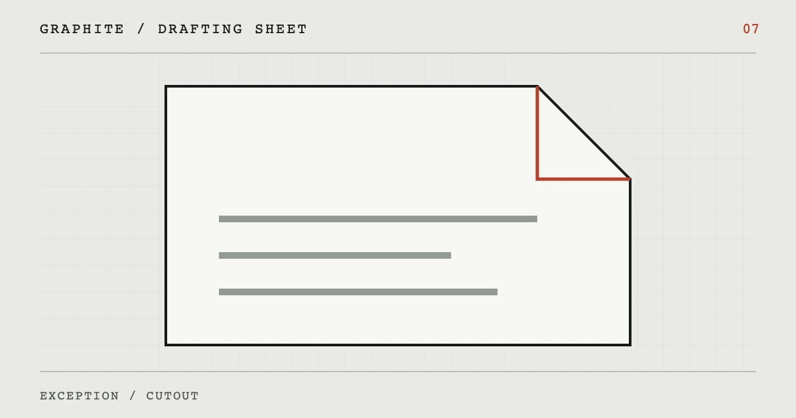

WORKING SHEET / 07
__r7_title__
__r7_intro__
图纸页签 CONTENTS / 04
01__r7_h2_1__
__r7_text_1__
02__r7_h2_2__
__r7_text_2__
小屏可在表格区域内横向滚动。
| __r7_table_col_1__ | __r7_table_col_2__ | __r7_table_col_3__ |
|---|---|---|
| __r7_table_row_1__ | __r7_table_cell_1_1__ | __r7_table_cell_1_2__ |
| __r7_table_row_2__ | __r7_table_cell_2_1__ | __r7_table_cell_2_2__ |
| __r7_table_row_3__ | __r7_table_cell_3_1__ | __r7_table_cell_3_2__ |
03__r7_h2_3__
__r7_text_3__
__r7_quote__
__r7_quote_attribution__
04__r7_h2_4__
__r7_text_4__
常见问题
__r7_faq_q1__
__r7_faq_a1__
__r7_faq_q2__
__r7_faq_a2__
__r7_faq_q3__
__r7_faq_a3__
来源栏
- __r7_source_label_1__
__r7_source_note_1__
- __r7_source_label_2__
__r7_source_note_2__
核对：